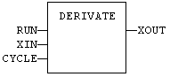
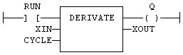

Function Block
Derivates a signal.
|
Name |
Type |
Description |
|
RUN |
BOOL |
Run command: TRUE=derivate / FALSE=hold. |
|
XIN |
REAL |
Input signal. |
|
CYCLE |
TIME |
Sampling period (should not be less than the target cycle timing). |
|
Name |
Type |
Description |
|
XOUT |
REAL |
Output signal. |
In LD language, the input rung is the RUN command. The output rung keeps the state of the input rung.
MyDerv is a declared instance of DERIVATE function block.
MyDerv (RUN, XIN, CYCLE);
XOUT := MyDerv.XOUT;

ENO has the same state as RUN.

MyDerv is a declared instance of DERIVATE function block.
Op1: CAL MyDerv (RUN, XIN, CYCLE)
LD MyDerv.XOUT
ST XOUT